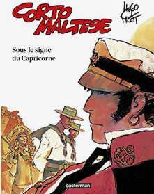

SOUS LE SIGNE DU CAPRICORNE
Sous le signe du Capricorne est le second album de la série Corto
Maltese, est regroupe six histoires mettant en scène le marin en Amérique
du Sud. Publié sous forme de feuilleton dans le journal
Pif Gadget en 1970, il paraîtra en album en 1979, totalisant 140
pages.
Histoire
Les six histoires se déroulent de 1916 à 1917 en Guyane Hollandaise puis
Française, au Brésil, à Saint-Kitts et enfin au Honduras Britannique, où
les échos de la grande guerre sont faibles, mais bien présents. Dans la
première histoire, intitutlée
Le secret de Tristan Bantam, Corto
fait la connaissance, à Paramaribo, de personnages qui reviendront
fréquemment dans la série: le docteur Jeremiah Steiner (inspiré de
Rudolf Steiner, célèbre occultiste), ancien professeur de l'Université de Prague,
devenu alcoolique, et Tristan Bantam, jeune britannique voulant poursuivre
les recherches de son père décédé du continent perdu de Mu, qui se
trouverait dans le Haut Xingu, au Brésil. Les histoires suivantes rendent
compte de ces recherches, et de quêtes annexes n'ayant pour certaines
aucun rapport avec l'histoire précédente. Durant ses voyages, en plus de
nombreux personnages fictifs, Corto Maltese rencontrera quelques
personnages historiques, tels que le
cangaceiro
Corisco ou
encore
Hasso von Manteuffel, et visitera différents lieux, comme Salvador de Bahia ou
Saint-Laurent-du-Maroni.
